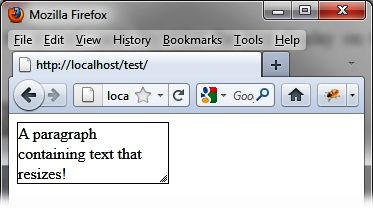

{% include JB/setup %}
{% raw %}
<div>
<div class="calibre13"></div><div class="book" title="Chapter 13. Resizing"><div class="book"><div class="book"><div class="book"><div class="calibre13"></div><h1 class="title1"><a id="resizing" class="calibre1"></a>Chapter 13. Resizing</h1></div></div></div><p class="calibre7">To provide a full range of possibilities for manipulating objects on
  the page, jQuery UI allows us to resize each element of the page.</p><div class="book" title="Basic Principles of Resizing"><div class="book"><div class="book"><div class="book"><h1 class="title2"><a id="basic_principles_of_resizing" class="calibre1"></a>Basic Principles of Resizing</h1></div></div></div><p class="calibre7">Suppose we want to write the HTML code to resize the text display on
    the screen, as shown in <a class="ulink" href="ch13.html#resized_text" title="Figure 13-1. Resized text">Figure 13-1</a>.</p><div class="book"><div class="figure"><a id="resized_text" class="firstname"></a><div class="book"><div class="book"><a id="I_mediaobject13_d1e12393" class="firstname"></a></div></div><p class="title4">Figure 13-1. Resized text</p></div></div><p class="calibre7">Here, we have a <code class="literal">&lt;p&gt;</code> element
    containing text (with a border), which can be resized using the mouse (by
    dragging the right side or the bottom, or by using the resize icon in the
    bottom right corner).</p><p class="calibre7">To allow resizing, we create a <code class="literal">&lt;p&gt;</code> element for the item we want to
    resize. All items displayed are resizable. In addition, we must state the
    original height or width of the element (required by Internet Explorer,
    except when one of them is already known, in the case of an image, for
    example).</p><p class="calibre7">And let’s not forget, of course, to indicate that the <code class="literal">&lt;p&gt;</code> element is managed by the jQuery UI
    <code class="literal">resizable ()</code> method so that the resize
    icon appears at the bottom right corner of the item:</p><a id="I_programlisting13_d1e12416" class="firstname"></a><pre class="programlisting">&lt;script src = jquery.js&gt;&lt;/script&gt;
&lt;script src = jqueryui/js/jquery-ui-1.8.16.custom.min.js&gt;&lt;/script&gt;

&lt;link rel=stylesheet type=text/css
      href=jqueryui/css/smoothness/jquery-ui-1.8.16.custom.css /&gt;

&lt;p style="border:solid 1px;width:150px"&gt;
   A paragraph containing text that resizes!
&lt;/p&gt;

&lt;script&gt;

<span class="firstname"><strong class="userinput">$("p").resizable ();</strong></span>

&lt;/script&gt;</pre></div></div></div>

{% endraw %}

